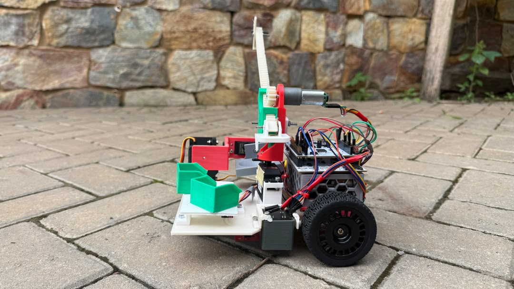

01 / 03Featured project · Autonomous robotics
RoboX: autonomous package handling
A compact mobile robot designed to follow paths, identify colour-coded packages, pick and store them, then deliver them precisely - while handling obstacles and maintaining balance.
- Approach
- Concept selection, CAD, 3D printing and integrated controls
- System
- Line sensing, colour detection, encoders, rack-and-pinion pickup and a 2-axis gimbal
RoboticsEmbedded systemsCADControl